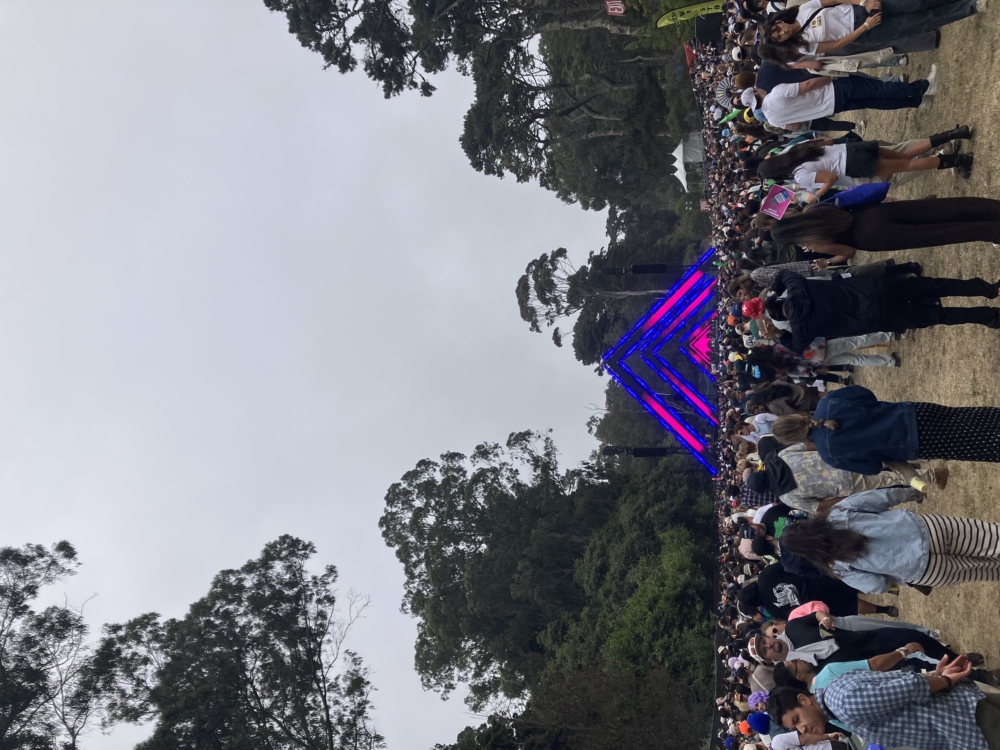
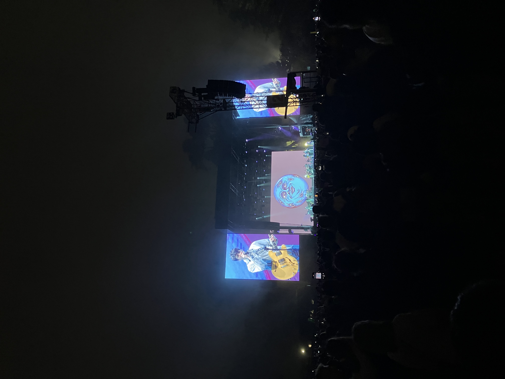

Saturday, August 9th, 2025
Day 2 of Outside Lands! We caught a ride to the festival today after a baby shower pre-game.
Some different energy at the festival today, maybe less nervousness that can go with day 1. I liked
seeing all the people sitting at different moments, and the little pockets of the festival
that I hadn't seen yet.
This was at Good Neighbours.

Soma stage for girlmath.

Ended the night with Vampire Weekend. There was one part of the set where they took requests from the crowd, non-Vampire Weekend songs. Very fun and brave and shows how talented the group is.
